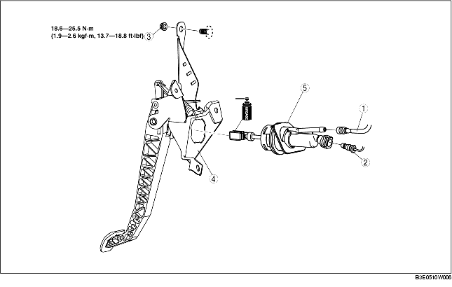
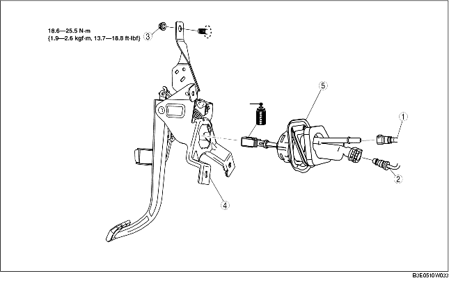

1. Remove the battery and battery tray.
(See BATTERY REMOVAL/INSTALLATION [ZJ, Z6].)
(See BATTERY REMOVAL/INSTALLATION [LF].)
2. Separate the steering shaft.
3. Remove in the order indicated in the table.
4. Plug the clutch pipe after removing it to avoid leakage.
5. Install in the reverse order of removal.
6. After installation, inspect the clutch pedal. (See CLUTCH PEDAL INSPECTION.)
L.H.D.

.
R.H.D.

.
1. Remove the reserve hose from the master cylinder while pressing the point indicated by the arrow in the figure.
2. Pull the clutch master cylinder clip to the position shown in the figure and pull out the clutch pipe connector straight to detach it.
1. Rotate the clutch master cylinder in the direction shown and remove.
L.H.D.
R.H.D.
2. Press on the tabs on the left and right sides of the push rod using a flathead screwdriver and remove the rod.
L.H.D.
R.H.D.
1. Push the push rod in until the tabs lock.
L.H.D.
R.H.D.
2. Rotate the clutch master cylinder in the direction shown until it stops.
L.H.D.
R.H.D.
1. Return the clutch master cylinder clip to the position shown in the figure.
2. Insert the clutch pipe connector straight.
3. Pull the clutch pipe to verify that it does not come off, and reinsert it completely.
4. Insert the reserve hose connector straight until a click is heard.
5. Pull the reserve hose to verify that it does not come off, and reinsert it completely.